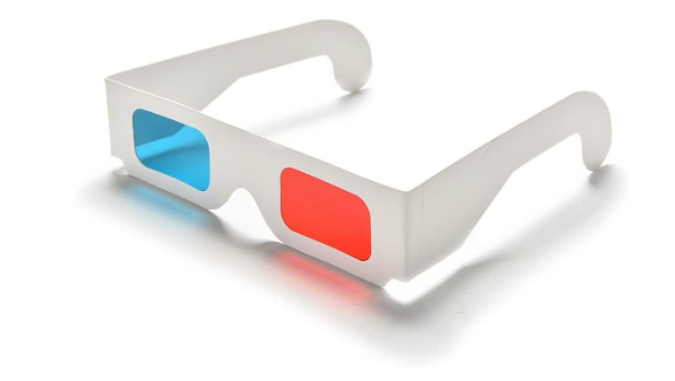

Résumé
Akshay Sarma
Publicis Sapient 2012–Present
Global digital consultancy. I joined as a Senior Experience Designer and grew into the Associate Creative Director role over a decade of enterprise product work — telecom, insurance, financial services, healthcare, and AI. Most engagements run Agile: I write user stories, draft acceptance criteria in Gherkin, and stay in the work through QA. I've led teams of designers, researchers, content strategists, and PMs, and I still do the work myself.
Associate Creative Director
- SailPoint — Redesign
- Core.AI — PESO
- Core.AI — Orchestration Journey App
- Marriott — Revenue Management
- Verizon — NextGen
- Verizon — Verizon Home App
Experience Lead
- Verizon — Connected Home Product Studio
- Wealth Management (NDA) — Salesforce Lightning App
- Blue Cross Blue Shield of MA — Website Redesign
- Liberty Mutual — Telematics App
- Corteva — Territory Manager Sales App
- CVS — Homepage and Navigation Redesign
- Xfinity — Microsite
- Xfinity — B2B
Senior Experience Designer
- Xfinity — Xfinity Communities
- Xfinity — Store Locator
- Xfinity — Xfinity On Campus
- Liberty Mutual — Telematics App
- Voya — Retirement Income Guidance
- Bridgespan — Responsive Website
- VCE — LCS Order Tracker
- CVS — Ready Fill
- Schneider Electric — Scalable Touchscreen Wall
- Boston Red Sox — Digital Baseball Card Game
- The Boston Globe — Member Center Redesign
- RAM Trucks — Upfit Configurator
- RAM Trucks — Eco-Diesel Calculator
- RAM Trucks — Homepage Redesign
- RAM Trucks — Redwing Limited Edition Landing Page
- RAM Trucks — Body Builder Guide Redesign
- RAM Trucks — ProMaster City Launch Campaign
- RAM Trucks — Search Functionality Upgrade
- RAM Trucks — Ram Nation Landing Page and Launch Campaign
Experience Designer
- RAM Trucks — Website Redesign
- RAM Trucks — Ram Commercial Redesign
- RAM Trucks — Black Express Landing Page
- Chrysler — Commercial Vehicles Redesign
- MetLife — Internal Application System Redesign
- Blinds.com — Configurator Redesign
- Staples — Copy and Print Solution Builder
BEAM Interactive 2010–2012
Boston-based digital agency. As Information Architect I owned UX across a broad client roster — financial services, healthcare, consumer, sports. This is where I became a UX designer: responsible for the full IA and interaction design on every project, from discovery through handoff.
Information Architect
- Virgin Mobile — Website Redesign
- Boost Mobile — Website Redesign
- Athena Health — Website Redesign
- Anodyne Health — Website Redesign
- Fidelity — Benefits Wizard
- Greater Boston Food Bank — Website Redesign
- Saucony — What is Strong Athletes Page
- Bluefin Labs — Website Redesign
- Deutsche Asset & Wealth Management — Research Library UI
- MINI Cooper — Mobile Website
- Merrill Edge — Product Launch Landing Page
- CBS Sports — Fantasy Baseball Landing Page
- US Trust — Our Latest Thinking Page & UI
- BEAM Interactive — Mobile Website
Winsper 2008–2010
Small brand and interactive agency. The Interactive Producer role was the chief project management position for all web and interactive work — from redesigns to email campaigns. I planned production schedules, served as the primary information architect, created sitemaps and wireframes, and coordinated creative departments with developers through QA.
Interactive Producer
